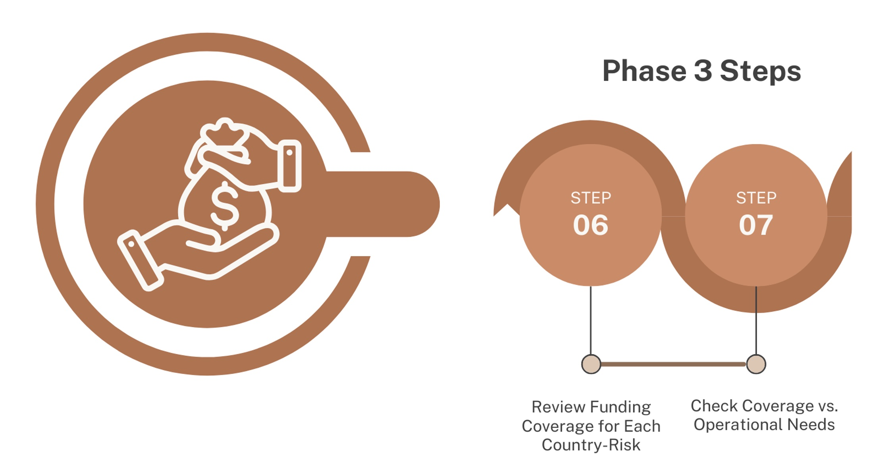
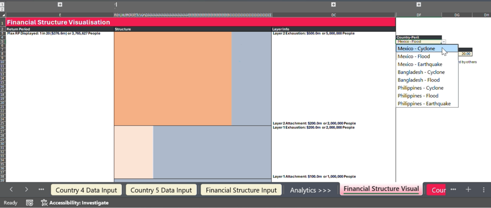
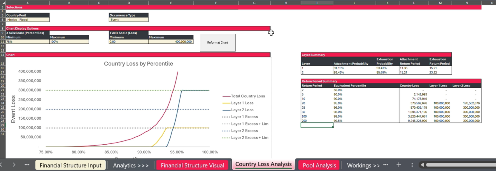

Phase 3: Country risk - financial analysis
{kind=link}

Once your pool has run, you can review what the pre-arranged funding looks like for each individual country risk. This can give you a view of the coverage you have set up and how this looks in relation to the overall volume of risk for that country-peril.
On the Financial Structure visualisation tab you can view how the coverage layers look in the context of the overall country risk.
{kind=link}

Financial Structure visualisation tab
You can select the country and risk in cell DF5
Scale the visualisation in cells DF8 and DG8 (i.e. what return periods you are visualising).
The total volume of the box area is the total country peril risk (accounting for inputted return periods). Layer 1 coverage is in light orange, layer 2 coverage in darker orange. The blue area is the financing, risk and number of people not covered by a pre-agreed financial structure (i.e. layer). This may be where other actors financing comes in, in risk financing coordination. It may also be where there is no prepositioned financing resulting in uncovered risk (a protection gap), this uncovered risk is usually borne by Governments or individuals/households .
Note: If you can’t see the layers it may be that you need to adjust the scale to the right position of where you set the coverage (Cells DF8 and DG 8). On the left of the sheet you can expand columns A to D. This gives you all the detail of the risk profiles for each layer, so you can see where your current structure sits and if you might want to adjust when you later optimise in step 5
Step 6: Review Funding Coverage for Each Country
It may be helpful to review the coverage and risk profile of each country you have in your risk pool and the risk profiles that have been inputted into the sheet.
{kind=link}

Country Loss Analysis
Guidance
Go to Country Loss Analysis.
Select a country in the cell A6.
Event Type cell E6 - You can select “Event” if you want the analysis to look at the data event by event or you can select “Yearly”, where it will group together all events that happen in a year into yearly losses.
The sheet displays a graph of the losses by percentile and return period (you can change between the two in cell L39
In Cells A11 B11 and D11 E11, you can adjust the graph scale.
The red plot/line shows the total country risk for all of the risks included in the sheet for that country.
The yellow solid plot/line displays layer 1 loss by Return period or percentile and the blue solid plot/line layer 2 loss by Return period or percentile.
The dashed lines display the excess and limit of each of those layers’ coverage.
The table in cells I16 to M17 displays the attachment and exhaustion points for the layers.
The table in cells I21 to N28 shows a number of key return period events and percentiles, with the results of the total country loss in column L. Then the total loss per layer of funding for each of those return period events. Note: Loss here is being used, as they are losses from the country and from the layers of funding - but you can also think about it as the total financial requirement for those size events with the country loss. The layer losses you can also think of as the payouts from the layers to try and cover your part of the risk.
The table at the bottom provides the more detailed granulation of the data provided in the graph and previous tables.
Step 7: Check Coverage vs. Operational Needs
Reviewing the graph displayed for each country risk you may also need to consider the following decisions outside of the tool.
Key Decision-Making Considerations
Who is covering the risk below the attachments and above the exhaustion? You can see from the graphs there are gaps and areas in blue that there either isn’t coverage for or may be covered by other emergency funding. Below the lowest layers attachment will be the risks which will be happening regularly but likely will be lower costs to respond to. This may be where you might assume that more sub-national, localised, and individual resources would come into play, and so wouldn’t need emergency coverage. Having knowledge of what this level might look like is important to think carefully about those attachment points and when the need for emergency financing may come into play. You may also want to consider in the very worst crisis what your gap in funding might be.
How might the funding be allocated over the phases of the crisis? Each of the funding releases could also be utilised in different phases of a crisis for various objectives. For example, it might be triggered ahead of a crisis based on early warning data to try to increase preparedness, on impact for response or to recover and rebuild post-event. Considering what the funding will be used for and how it may be spread or phased operationally is also an essential consideration in the financial coverage. This can be considered matrix financing, with horizontal severity layers and vertical time windows of crisis. Some prepositioned funding will be expected to cover all phases, while others may be prioritised into specific window such as an anticipatory window or only for recovery.